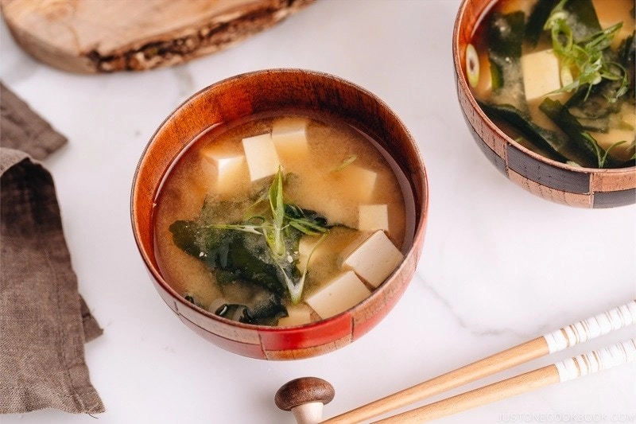

Vegan Miso Soup

Description
I cannot live without miso soup. Luckily, you can make a really good bowl of miso soup with only pantry items like dried kombu, silken tofu, and dried wakame. You can even enjoy it plain! Packed with umami goodness, it’s hands-down the easiest soup anyone can pull off anytime.
Ingredients
- 4 cups water
- 1 kombu
- 1 Tbsp dried wakame seaweed
- 2 green onions/scallions
- 7 oz soft/silken tofu
- 5 Tbsp miso
Steps
- Gather all the ingredients.
Make Kombu Dashi
- Put the kombu in 4 cups of water and let steep for 20 minutes, or as long as you can (maximum overnight).
- Transfer the kombu and water to a pot. Bring it to near boiling point on medium heat. If you didn’t steep for a long time at Step 1, it’s good to slowly bring the kombu water to near boiling on low heat. Once the bubbles start to appear and it looks like almost boiling, remove the kombu and turn off the heat. If you leave the kombu in water, kombu dashi can become bitter. So it’s usually recommended to take out. Use this used kombu to make a simmered kombu or homemade furikake (rice seasoning).
The rest of setps please refer to here.